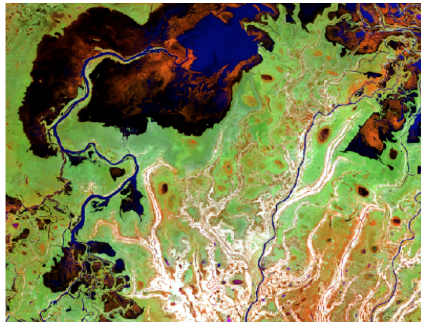

During the Fall term of my senior year, I was able to take an introductory remote sensing and satellite imagery course, and it was incredible!
Below are some snapshots of a change detection assignment I completed for this class.
Jasmin Becerra, Fall 2017
For this lab assignment, students were asked to process and analyze land cover changes via image differencing two images (taken on different dates) on ENVI. We were given about five different image sets to choose from.
I chose to analyze land cover in Mali before and after major floods in 2013.
Mali, 2013 Day 170
This is false-color NDVI image (band combination: NIR, SWIR, Red) of a region within Mali in 2013 on day 170, before flooding.
Mali, 2013 Day 234
This is another false-color NDVI image (same band combination) taken on day 234 of roughly the same location, after flooding.
Image Differencing

This greyscaled image is the result of subtracting the
Day 234 NDVI image from the Day 170 NDVI image.
Density Slices
Using the difference image, my next step was to create density slices to better assess change. Based on my approximations, the grey areas experienced little to no change (difference values of zero). The blue areas already contained water features or possessed high water concentrations that were later flooded. The light aqua/cyan blue areas were flooded or experienced a significan increase in water content. The orange areas and red areas depict regions that saw an increase in vegetation.